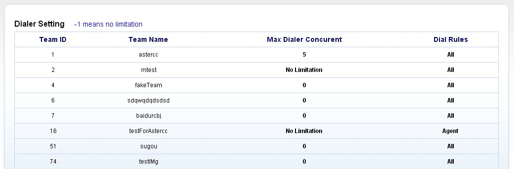
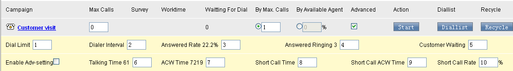
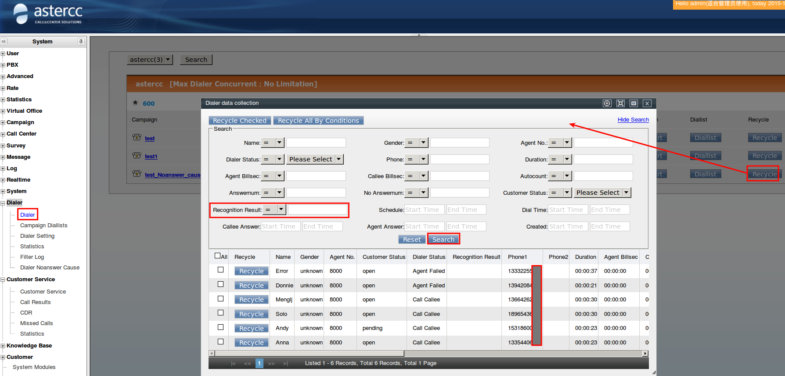
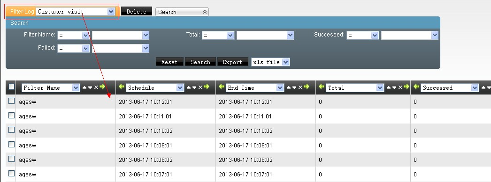
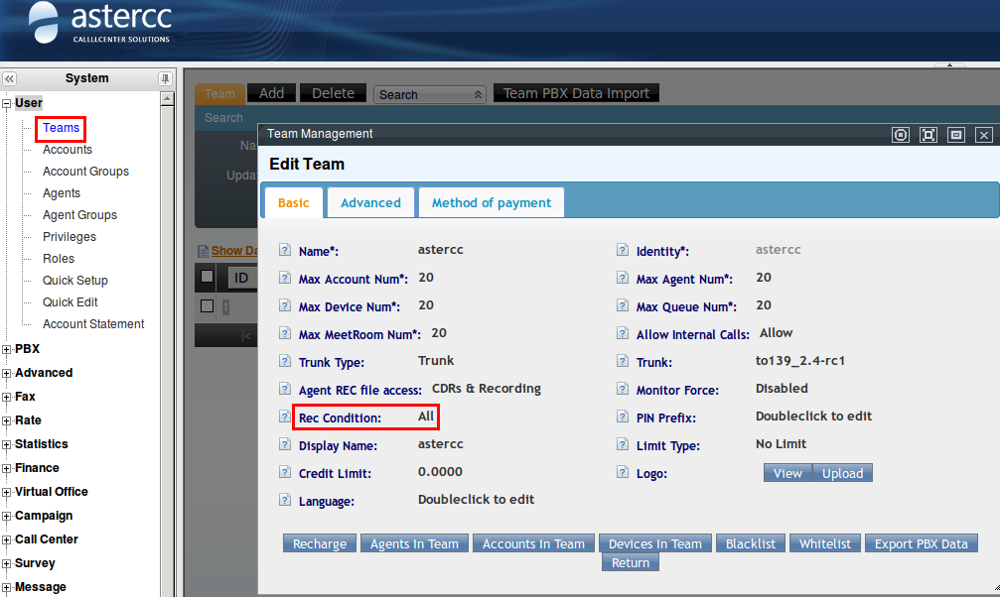
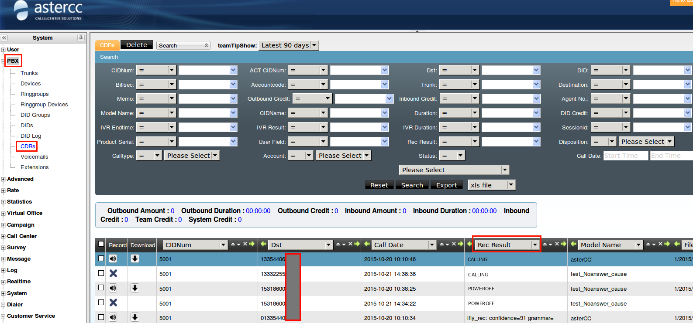
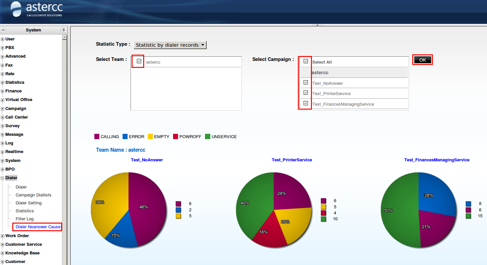
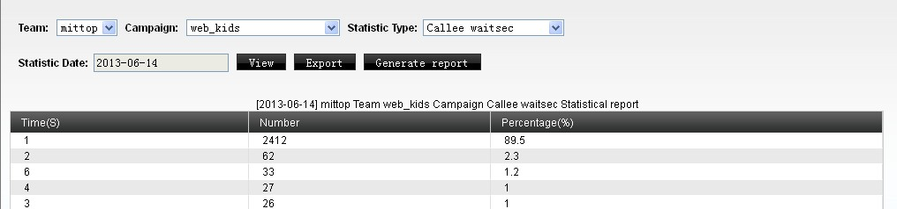
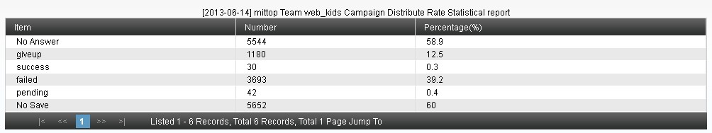

Marcador predictivo — referencia avanzada¶
Qué es¶
Esta página documenta a fondo el algoritmo del marcador predictivo — qué calcula, qué parámetros lo ajustan, y las herramientas asociadas (lista de marcación, filtros automáticos, motivos de no conexión, y estadísticas específicas de predictivo). Para la configuración básica de campañas, ver Marcador y campañas; para un caso de uso aplicado, ver Marcación predictiva.
Aplicaciones típicas (según la página de introducción del módulo): telemercadeo, difusión masiva de avisos, cobranza, encuestas de mercado, concertación de citas, televenta, venta por TV, seguros, y seguimiento posventa. La misma introducción resume las estrategias de conexión al contestar el cliente — IVR, cola, otra aplicación de telefonía personalizada, o un agente específico — y las estrategias de marcado — por cantidad máxima de llamadas simultáneas, por cantidad de agentes disponibles, o por una estrategia personalizada basada en duración promedio de timbrado, tasa de conexión o duración promedio de llamada; estas últimas corresponden a los mismos parámetros documentados en las fórmulas de predicción de esta página.
Cómo se usa¶
Panel del marcador¶
El panel muestra, por tarea con predictivo activo: nombre de la tarea, estado de los agentes del grupo asignado, cuántos clientes quedan por marcar en la lista, y controles para iniciar la marcación.
| Campo | Qué define |
|---|---|
| Límite de concurrencia máxima (equipo) | El total de llamadas en curso (en conversación + esperando + timbrando) de todo el equipo no puede superar este valor, sin importar cuántos agentes libres haya |
| Límite de concurrencia (tarea) | Igual, pero acotado a una tarea específica — solo aplica en modo "por concurrencia máxima" |
| Horario de trabajo | Fuera de este rango, el marcador no marca (en modo "por porcentaje de agentes" además requiere agentes conectados) |
| Clientes pendientes | Cuántos quedan en la lista de marcación de esa tarea |
Las dos estrategias de marcado¶
| Estrategia | Fórmula base |
|---|---|
| Por concurrencia máxima | llamadas a lanzar = límite de concurrencia − (en curso + timbrando + esperando) |
| Por porcentaje de agentes disponibles | llamadas a lanzar = agentes libres × porcentaje configurado |
Tip
Los agentes marcados como "solo saliente manual" no cuentan como "agentes libres" para la estrategia por porcentaje — el marcador predictivo los excluye del cálculo.
En ambos casos, el resultado nunca puede superar la jerarquía de límites: licencia del sistema ≥ límite de equipo ≥ límite de tarea ≥ valor calculado. Si el valor calculado excede cualquiera de los niveles superiores, se recorta automáticamente al límite más bajo aplicable.
Configuración del marcador (por equipo)¶
En Marcador → Configuración del marcador, el administrador define, por equipo:
- El límite de concurrencia máxima de ese equipo (-1 = sin límite propio, hereda el de licencia; 0 = concurrencia deshabilitada para ese equipo).
- La regla de marcado permitida en el panel: ambas estrategias disponibles a elección del operador, o forzar únicamente una de las dos.

Tip
La suma de los límites de concurrencia de todos los equipos no puede superar el límite de licencia del sistema — si todos los equipos se dejan en -1, el sistema reparte dinámicamente hasta el máximo de licencia.
Parámetros avanzados (ajuste fino de la predicción)¶
Disponibles al marcar "configuración avanzada" en una tarea. El objetivo de todos ellos es el mismo: que, en el momento exacto en que un agente cuelga, ya haya un cliente contestado esperándolo — ni antes (agentes ociosos por sobra de llamadas) ni después (clientes esperando de más, o abandonando).
| Parámetro | Qué ajusta |
|---|---|
| Límite por lanzamiento | Máximo de llamadas que el marcador origina en una sola pasada — sirve para distribuir el timbrado en el tiempo en vez de lanzar todo de golpe |
| Intervalo entre lanzamientos | Segundos mínimos entre una pasada de marcado y la siguiente para la misma tarea |
| Tasa de contactación del cliente | Referencia calculada por el sistema (contestadas ÷ marcadas); el administrador puede ajustar el valor usado por la fórmula de predicción |
| Duración promedio de timbrado hasta contestar | Usado para decidir qué llamadas timbrando aún "cuentan" como futuras conexiones válidas — las que ya timbran más que este valor se descartan del cálculo |
| Tiempo promedio de espera del cliente en cola | Clientes ya contestados con menos tiempo de espera que este valor se consideran "todavía viables" y se restan de la próxima tanda a marcar |
| Duración promedio de llamada / gestión posterior | Predicen cuándo un agente en llamada o en ACW estará libre |
| Umbral y proporción de "llamada corta" | Define qué se considera una llamada corta (cliente poco cooperativo) y su proporción esperada sobre el total — refina la predicción de cuándo un agente vuelve a estar libre |

Fórmulas de predicción¶
Por concurrencia máxima:
llamadas a marcar = límite de concurrencia − (en curso + timbrando + esperando)
Por porcentaje de agentes (sin parámetros avanzados):
clientes válidos timbrando = (timbrando ≤ duración promedio de timbrado) × tasa de contactación
clientes válidos esperando = (espera actual < espera promedio)
llamadas a marcar = (agentes libres − válidos timbrando − válidos esperando) / tasa de contactación × %agentes
Por porcentaje de agentes (con parámetros avanzados activados): además de lo anterior, suma a "agentes libres" una estimación de: - Agentes en ACW cuyo tiempo transcurrido ya supera (ACW promedio − timbrado promedio). - Agentes en llamada corta cuyo tiempo ya supera el umbral correspondiente. - Agentes en llamada larga cuyo tiempo ya supera (duración promedio + ACW promedio − timbrado promedio).
llamadas a marcar = (libres + ACW próximos + cortas próximas + largas próximas − válidos timbrando − válidos esperando) / tasa de contactación × %agentes
Warning
El resultado de cualquiera de las fórmulas anteriores siempre queda acotado por el límite de concurrencia de la tarea y por el límite por lanzamiento — si el cálculo da un número mayor, se usa el menor de todos los límites aplicables.
Lista de marcación y recuperación de datos¶
La lista de marcación es una copia de trabajo del paquete de clientes, exclusiva para que el marcador la consuma — cada intento de marcado mueve al cliente de vuelta al paquete y lo borra de la lista (con un margen de ~1 minuto tras colgar antes de limpiarse). Para volver a intentar esos números, hay que recuperarlos de regreso a la lista.
- Recuperación manual: por selección puntual o por condición de búsqueda (ej. estado = pendiente + estado de marcado = contestado por el cliente) — con campo de teléfono a usar, prioridad, y hora de marcado.
- Filtro de recuperación automática: programa una recuperación recurrente con condiciones guardadas (ej. "estado = sin procesar Y estado de marcado = timbrando cliente Y intentos ∈ {1,2}"), con horario tipo cron y ejecución inmediata opcional (útil si la lista se vació antes de la hora programada). El log de filtros registra cada corrida: inicio, fin, SQL generado, y cantidad recuperada — útil para auditar por qué la lista se vació o se llenó en cierto momento.

Warning
Solo se puede eliminar de la lista de marcación un cliente cuyo estado de marcado sea "pendiente" (aún no intentado) — el resto se depura automáticamente. Para depuraciones o recuperaciones masivas, se recomienda acotar la condición de búsqueda para procesar en tandas de no más de ~5,000 registros por operación, evitando timeouts.

Motivos de no conexión (detección de números inválidos)¶
Con la grabación de llamadas en "todas" activada a nivel de equipo, el sistema puede clasificar por qué un número no conectó (apagado, fuera de servicio, número inexistente, etc.) — útil para depurar bases de datos de baja calidad. Se consulta por tarea, y también aparece en el registro de llamadas de PBX para marcaciones manuales.



Estadísticas específicas de predictivo¶
Reporte generado una vez al día (00:00, sobre el día anterior) por tarea, o bajo demanda para el día en curso. Distribuciones incluidas:

| Distribución | Qué mide |
|---|---|
| Tiempo de espera del cliente contestado | Cuánto espera un cliente ya conectado hasta que un agente lo atiende |
| Tiempo de abandono | Cuánto espera un cliente antes de colgar sin ser atendido (incluye el caso "colgó justo cuando el agente contestó") |
| Tiempo de timbrado hasta contestar | Cuánto tarda un cliente en contestar la llamada |
| Duración de llamadas exitosas / fallidas / en seguimiento | Por estado final asignado por el agente |
| Duración de gestión posterior (ACW) por estado final | Igual, pero el tiempo de trabajo posterior a colgar |
| Sin guardar | Llamadas conectadas donde el agente no guardó resultado |
| Distribución global | Porcentaje de: no conectadas, abandonadas, exitosas, fallidas, en seguimiento, sin guardar — todas sobre el total de marcaciones |

Referencia rápida¶
| Necesito | Dónde |
|---|---|
| Límite de concurrencia por equipo | Marcador → Configuración del marcador |
| Ajustar parámetros de predicción | Tarea de campaña → Configuración avanzada de predial |
| Recuperar clientes a la lista de marcación | Predial → Lista de marcación → Recuperación (manual o por filtro) |
| Ver por qué un número no conectó | Predial → Motivos de no conexión |
| Auditar corridas de un filtro automático | Predial → Log de filtros |
| Estadísticas de predictivo | Predial → Estadísticas |
Fuentes¶
raw/zh/预拨号.txtraw/zh/模块使用说明/预拨号.txtraw/zh/模块使用说明/预拨号/拨号器.txtraw/zh/模块使用说明/预拨号/预拨号列表.txtraw/zh/模块使用说明/预拨号/预拨号统计.txtraw/zh/模块使用说明/预拨号/预拨号未接通原因.txtraw/zh/模块使用说明/预拨号/预拨号过滤器日志.txtraw/en/module_manual/dialer/campaign_diallists.txtraw/en/module_manual/dialer/dialer.txtraw/en/module_manual/dialer/dialer_noanswer_cause.txtraw/en/module_manual/dialer/dialer_setting.txtraw/en/module_manual/dialer/filter_log.txtraw/en/module_manual/dialer/statistics.txt